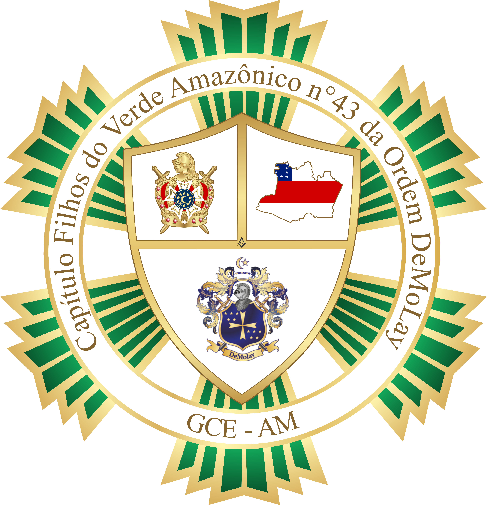

História do Capítulo Filhos do Verde Amazônico nº 43

Histórico
Fundação: 08/03/1986
Instalação: 03/05/1986
O Capítulo foi inicialmente fundado na Grande Inspetoria Litúrgica do Amazonas, GILAM, em 8 de março de 1986, sendo instalado em 3 de maio do mesmo ano. Como vários capítulos do Amazonas na década de 1980, ficou inativo logo depois.
Em 2013, após a retomada dos Capítulos Filhos de Hiram (FDH) nº 45 e Cidade de Manaus (CDM) nº 26, o Grande Conselho Estadual da Ordem DeMolay do Estado do Amazonas (GCE-AM), na presidência do Grande Mestre Estadual Tio Etzel Chaves Oliveira Santos, com o auxílio do Grande Secretário Estadual Tio Rodrigo Motta Coelho, iniciou o projeto de reativação do Capítulo Filhos do Verde Amazônico (FVA) nº 43.
O presidente do conselho do CDM nº 26, Tio Hygor Rodrigues Goellner, apresentou a proposta ao irmão Sérgio Lyra Barboza. O irmão José Augusto de Freitas Prazeres também apoiou a iniciativa, inspirada no resgate anterior do capítulo AJU nº 263.
O objetivo era reerguer o capítulo na GBLS Floresta Amazônica nº 39, fora da zona central de Manaus, onde o CDM e o AJU já estavam ativos.
Soerguimento
Quatro membros foram transferidos do CDM para formar o FVA: Sérgio Lyra Barboza, Carlos Augusto Silvestre Siqueira, Jakson França Guimarães Junior e o Sênior DeMolay Paulo Henrique da Silva Cruz.
Para reativar o capítulo, foi necessário arrecadar cerca de R$ 5.000,00. Metade do valor foi doado pela Grande Loja Maçônica do Amazonas (GLOMAM) e pelo Grão-Mestre Elzio Duarte Alecrim; a outra metade ficou sob responsabilidade do próprio capítulo.
Os Tios Rodrigo Motta Coelho e René Levy Aguiar foram fundamentais na arrecadação, apoiando as vendas da feijoada destinada ao resgate do capítulo.
As sindicâncias foram realizadas para selecionar os candidatos da primeira turma. O processo foi acompanhado pelos primeiros membros do Conselho Consultivo: Tio Benedito Carlos Siqueira e Tio Sebastian Bezerra da Silva.
Fundação e primeira turma
A Fundação e Instalação ocorreram em 20 de setembro de 2014. A cerimônia teve Carlos Augusto como Mestre Conselheiro, Sérgio Lyra como 1º Conselheiro e Jakson França como 2º Conselheiro.
A Carta Constitutiva Temporária foi lida pelo Grande Mestre Estadual Tio Etzel Chaves Oliveira Santos e a cerimônia presidida pelo Mestre Conselheiro Estadual irmão Yuri Simon Salim Jorge Assel.
Primeira turma
- Affonso Henrique Chaves de Souza
- Alex Sander Francisco de Oliveira Trindade
- Artur de Souza Fonseca
- Breno Lucas Castro Cardoso
- Cristóvão Jardel Andrade Franco
- Douglas da Silva Marques
- Douglas dos Santos Silva
- Geovane de Souza Ferreira
- Janderson do Nascimento Lira
- Jefferson Mady da Silva Neto
- João Victor Pantoja Colares
- Marcus Marinho de Freitas
- Naeff Matheus da Cruz Montenegro Silva
- Rendolly de Braga da Silva
- Salenko do Nascimento Bezerra
- Wiliam Costa da Silva
Crescimento e prêmios
Em 2015, o irmão Carlos Augusto foi eleito Mestre Conselheiro Estadual Adjunto para a gestão 2015-2016, o primeiro membro do capítulo a assumir cargo no Gabinete Estadual. Na gestão seguinte, o irmão Janderson do Nascimento Lira também assumiu o mesmo cargo.
O capítulo organizou os Jogos Estaduais da Ordem DeMolay do Amazonas (JEODAM) em 2015 e o Congresso Estadual da Ordem DeMolay do Estado do Amazonas (CEOD-AM) em 2016, ambos com sucesso.
Em dezembro de 2015, o corpo patrocinador mudou da GBLS Floresta Amazônica nº 39 para a GBLS Firmeza e Renascença nº 37.
Em 2016, os irmãos Tio Etzel Chaves Oliveira Santos e Tio Henrick Horta Feitoza se transferiram para o capítulo, ambos iniciados no Ajuricaba/Amazonas e maçons na GBLS Firmeza e Renascença nº 37.
Em 2017, o primeiro Chevalier do capítulo foi o irmão Sérgio Lyra Barbosa. Também se tornaram Chevaliers os irmãos Janderson do Nascimento Lira, Guilherme Destro Calixto e Luis Felipe de Oliveira Mendes.
O irmão Pedro Jorge Negreiros Uchôa foi o primeiro membro do capítulo a completar a Campanha Nacional de Incentivo à Excelência (CNIE) em 2017.2. Outros que também conquistaram a CNIE foram Marlon Prado da Silva, Gabriel da Silva Zumaeta e Iago Almeida Catunda.
O irmão Kelson Oliveira da Rocha foi o primeiro membro do capítulo a conquistar a Caneta de Ouro. O irmão Marlon Prado da Silva também alcançou esse prêmio em 2019. O irmão Guilherme Destro Calixto recebeu o prêmio Past-Ilustre Comendador Cavaleiro por Serviços Meritórios em 2019.
Em 2018, o Amazonas teve a primeira Legião de Honra, com destaque para o Tio René Levy Aguiar, Grão-Mestre Ad vitam da GLOMAM. Em 2019, o capítulo teve outros dois legionários, incluindo o primeiro Legião de Honra Ativa do estado.
Novas iniciativas
Em 2020 foi fundado o Clube de Mães e Amigos Guardiães das Esmeraldas nº 262. A primeira diretoria teve Regiane do Nascimento Lira, Michelle Cristina Xavier dos Anjos, Tânia Maria Souza Prado e Mary Cristina Ratti Moreno.
Também em 2020 foi criado o Colégio Alumni Filhos do Verde Amazônico nº 255, com uma diretoria formada por Sérgio Lyra Barboza, Kelson Oliveira da Rocha, Luiz Felipe de Oliveira Mendes, Gabriel da Silva Zumaeta, Willian da Silva Maia, Paulo Henrique da Silva Cruz, Janderson do Nascimento Lira e Pedro Jorge Negreiros Uchôa.
Lista dos Mestres Conselheiros
- 2014.2 - Carlos Augusto Silvestre Siqueira
- 2015.1 - Sérgio Lyra Barbosa
- 2015.2 - Janderson do Nascimento Lira
- 2016.1 - Antônio Augusto de Jesus Araújo
- 2016.2 - Antônio Augusto de Jesus Araújo
- 2017.1 - José Vitor Gonçalves Campos Sobrinho
- 2017.2 - Pedro Jorge Negreiros Uchôa
- 2018.1 - Carlos Augusto Silvestre Siqueira
- 2018.2 - Kelson Oliveira da Rocha
- 2019.1 - Marlon Prado da Silva
- 2019.2 - Gabriel da Silva Zumaeta
- 2020.1 - Gabriel da Silva Zumaeta
- 2020.2 - Iago Almeida Catunda
- 2021.1 - Iago Almeida Catunda
Lista dos Presidentes do Conselho Consultivo
- 2014 - Sebastian Bezerra da Silva
- 2015 - Sebastian Bezerra da Silva
- 2016 - Etzel Chaves Oliveira Santos
- 2017.1 - Etzel Chaves Oliveira Santos
- 2017.2 - Rodrigo Motta Coelho
- 2018 - Jocélio Barreto Cardoso
- 2019 - Jocélio Barreto Cardoso
- 2020 - Jocélio Barreto Cardoso
- 2021 - Jocélio Barreto Cardos